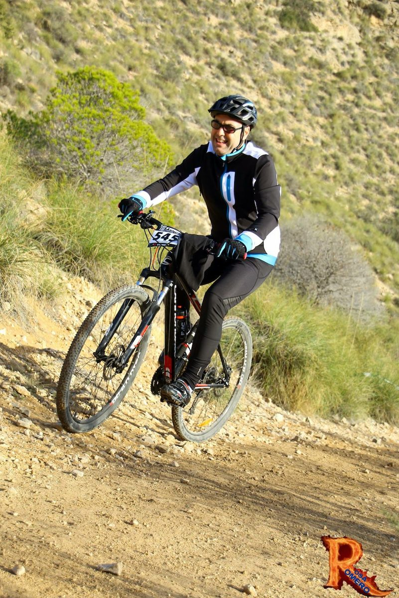
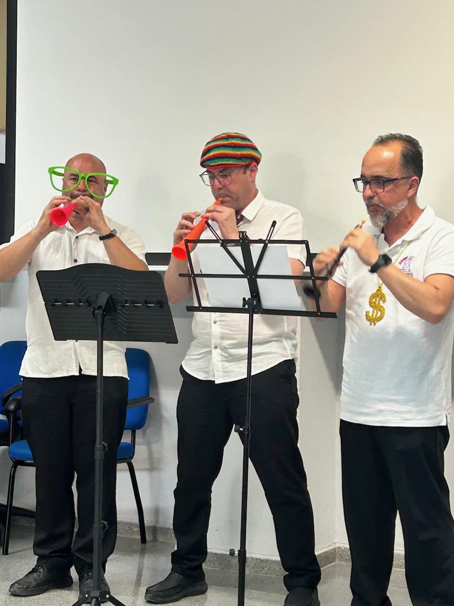

Perfil profesional
Investigar, colaborar y compartir conocimiento.
Xavier Barber · Catedrático de Estadística e Investigación Operativa en la Universidad Miguel Hernández de Elche.
Una base metodológica, muchas aplicaciones
Mi actividad en i-MInD combina modelos bayesianos, aprendizaje automático y análisis de eficiencia. Colaboro con especialistas de salud, ecología, medio ambiente, industria y economía para abordar preguntas que necesitan tanto conocimiento del ámbito como rigor analítico.
Doctor por la UMH desde 2009, con una investigación en modelos geoestadísticos para índices bioclimáticos dirigida por Javier Morales y Antonio López-Quílez. Diplomado en Estadística por la Universidad de Alicante y licenciado en Ciencias y Técnicas Estadísticas por la UMH.
Liderazgo y comunidad científica
- Subdirector de i-MInD, Universidad Miguel Hernández de Elche.
- Chair del Representative Council de la International Biometric Society y miembro ex officio de su Executive Board, 2026–2027.
- Miembro de la Junta Ejecutiva de la Sociedad Española de Bioestadística.
- Responsable de la Unidad Mixta de Investigación UMH–FISABIO en Métodos Estadísticos en Ciencias de la Salud.
- Vicerrector adjunto de Investigación en la UMH, 2011–2023.
- Actividad editorial y de revisión científica, incluida la edición estadística para Public Health Nutrition.
Gobernanza de la International Biometric Society ↗
Ética e integridad en la investigación
Desde septiembre de 2026, miembro con perfil bioestadístico de dos comités de la Universidad Miguel Hernández de Elche:
- Comité de Ética e Integridad en la Investigación (CEII).
- Comité de Ética de Experimentación Animal (CEEA).
Bicicleta, dolçaina y raíces
Soy de Dénia. Hoy dedico mi tiempo de ocio a la bicicleta y a tocar la dolçaina: dos maneras de desconectar y compartir tiempo con otras personas. El remo también forma parte de mi trayectoria, aunque actualmente lo tengo en pausa.

